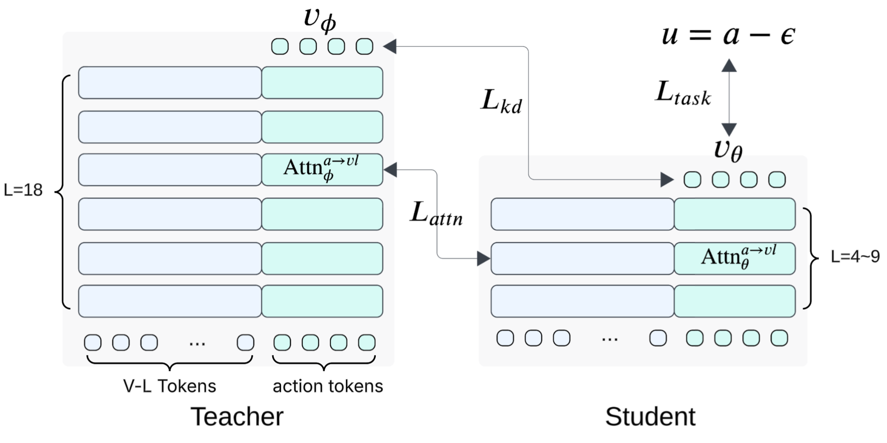

Shallow-π：把策略做浅，为什么机器人反而做得更好？
Shallow-π：把策略做浅，为什么机器人反而做得更好？
关键判断：这篇工作的价值是把 π 架构中逐层耦合的 VLM 与动作头一起压浅，再用有选择的蒸馏补回能力。真机上学生胜过教师，很可能既包含能力保留，也包含低延迟带来的闭环收益；不能直接解释为学生学到了更强的泛化表征。
读完应记住四件事：联合减深、只对齐动作读取条件的注意力、平均分掩盖长任务退化、闭环延迟会改变最终成功率。
1. 背景与材料
Boseong Jeon、Yunho Choi、Taehan Kim，Samsung Research。本文依据 arXiv v1 全文（2026-01-28）阅读，覆盖方法、全部实验与局限；作者主页另将其列为 IROS 2026。结果以该 arXiv 版本为准，没有执行代码或独立复现实验。项目页提供演示入口。
2. 关键问题：机器人算完时，目标已经移动了
Golden Case 来自论文的动态插孔任务：ALOHA 抓起圆柱销，插入正在移动的小孔，主要依赖左腕相机观察目标。难点不只是识别孔在哪里，而是生成的动作抵达执行时，观测是否仍然有效（§6.2、Fig. 6）。
π 类模型先通过视觉语言模型（VLM）编码图像与指令，再用 flow-based 动作头把噪声迭代变成连续动作块。视觉语言特征会在每一层注入动作头；动作头又会被多个去噪步反复调用。只把骨干变小，仍然留下重复执行的深动作头。 减少视觉 token 也不等于同比例降低实际延迟，因为 token 计算可并行，深度依赖却需要顺序执行。Fig. 2 在 H100 与 Orin 上支持这一点，但该 profiling 使用了 torch.compile，不宜把硬件相关趋势当作普适复杂度定理。
能否直接跳过相似层？作者发现，相邻层余弦相似度会随噪声时间改变，而且相似不等于可删除：早期某些高相似层被跳过后，比后期低相似层损失更大。按单层敏感度排序逐步删除，超过三层后成功率崩塌（§4、Fig. 3–4）。这说明其测试的跳层启发式不适合激进压缩；它不是对所有可学习路由器的否定证明，因为单层敏感度排序并不能刻画联合删层后的交互。
3. 关键方法：同时压缩计算链和条件传递链
沿着插孔例子走一遍：
- 初始化：从训练好的教师中抽取层，构造更浅的学生，VLM 与动作头同步从 18 层减到 6 层；逐层条件注入的结构仍保留。
- 训练输入：给定图像、指令、机器人状态与示范动作块，把动作加噪。教师提供速度场预测和一个中间层的注意力分布，学生学习生成动作，也学习动作该怎样读取视觉语言上下文。
- 推理输出：只运行学生。先生成可缓存的视觉语言 key/value，再让浅动作头多次预测速度、积分得到动作块。去掉的是网络层数，并非把生成改成一步。
- 闭环执行：更快得到新动作块，减少依据旧孔位继续运动的时间。论文真机使用长度 50 的动作块和 30 Hz 控制，每执行 7 个动作后请求新推理，等待期间继续执行旧块，并做 temporal ensembling（§6.2）。

图中蓝色是视觉语言 token，绿色是动作 token。应看两个位置：左右模型的两条分支一起变浅；中间的注意力监督只约束动作如何读取视觉语言条件，没有要求学生逐层复刻教师的全部表示。图片来自原文 Figure 5。
三个监督信号各自补什么？
令示范动作块为 $a$，高斯噪声为 $\epsilon$，图像等观测为 $o$，指令为 $l$。原文采用
$\tau=0$ 是噪声端，$\tau=1$ 是动作端。学生 $v_\theta(a_\tau,o,l,\tau)$ 预测把噪声推向动作的速度；这里的速度是 flow 空间中的速度场，不应直接等同于机器人末端物理速度。
原文 Eqs. 1–3 给出：
- 任务监督使学生仍朝示范动作走，避免只复制教师偏差。
- 输出蒸馏让学生拟合教师的速度预测。虽然正文也用 trajectory imitation 描述，但明确实现目标是速度 MSE，不能据此称为完整 rollout 轨迹匹配或 on-policy 蒸馏。
- 注意力蒸馏针对每个 action query，约束其在视觉语言 token 上的分布，KL 方向是教师到学生。直觉上，它补的是浅动作头读取条件的方式；这不等于证明被关注的 token 就是动作的因果依据。
作者只在中间层做注意力对齐：早层据称已有初始化对齐，末层又已有输出监督，中间层补充性更强（§5.2）。只蒸馏动作读取条件的注意力，是全文最值得带走的设计；强行约束全部 token，可能过度限制浅学生对表征的重组。
复现尚缺什么？ §5 说均匀抽层初始化，§5.2 又说直接复制底层，措辞不完全一致；具体抽层和教师—学生中间层映射 [?]。全文没有明确给出三项损失权重、attention head 聚合细节、完整优化器配置与去噪步数；注意力公式也未显式写缩放项。教师作为监督目标，学生接受训练，但模块级冻结清单未交代，不应自行补成“全参数训练”。
4. 数据与设置：任务内蒸馏，空间扰动评估
仿真使用 LIBERO 的 Spatial、Object、Goal、Long 四组任务。教师 π₀ / π₀.₅ 与学生均训练 30K steps、batch size 64；只输入第三人称相机与腕部相机，代码直接跳过第三张图，而非填黑图（§6.1）。
真机分别训练 ALOHA/π₀ 与 RB-Y1/π₀.₅，教师训练和学生蒸馏均为 100K steps、batch size 128，学生为 6 层。示范规模包括动态插孔 92 episodes、插泡沫 100、舀苹果 190、倒豆 100、垃圾分类 2,600、开盖插销 A/B 分别 436/214（§6.2）。这些是任务数据规模，不是 Table 3 的评估次数；真机只使用机载传感器。
所谓 unseen 条件是圆柱初始位置平移 3 cm，以及垃圾桶位置移动超过 10 cm。它测试空间配置扰动，没有直接覆盖新任务、新指令组合或新机器人。
5. 关键结果：成功率、计算成本与闭环收益要分开读
平均成功率接近教师，长任务却更脆弱
Table 2 的成功率为百分数且已取整；CUDA 时间在 H100 上测得。
| 模型 | 平均成功率 | Long 成功率 | FLOPs（T） | CUDA 时间（ms） |
|---|---|---|---|---|
| π₀ | 95 | 92 | 2.93 | 22.6 |
| π₀-L6 | 94 | 85 | 1.18 | 10.5 |
| π₀.₅ | 96 | 93 | 3.39 | 25.5 |
| π₀.₅-L6 | 95 | 90 | 1.30 | 11.3 |
| π₀.₅-L9 | 97 | 93 | 1.82 | 14.8 |
| SmolVLA | 87 | 71 | 0.50 | 26.0 |
按表中时间计算，两个 L6 学生分别约快 2.15×、2.26×。但“损失不到 1 个百分点”是作者主张，取整后的主表只能支持约 1 点差异，无法单凭它核验严格小于 1。π₀ 的 Long 更从 92 降至 85；平均分接近并不意味着所有能力都保留。
SmolVLA 的 FLOPs 更低却更慢，与动作头深度仍较大的解释一致。但其架构和预训练来源不同，这不是一个只改变“是否蒸馏”的严格对照；不能由此推出所有小骨干都不如蒸馏。相反，Table 1 中相同学生结构的损失消融更能隔离蒸馏贡献。
注意力选对对象，比“多蒸馏一点”更重要
Table 1 的 L6 消融固定教师、训练步数和 batch：仅任务监督 93.0；加入速度蒸馏 93.9；再加入注意力蒸馏 94.6。所以大部分能力在抽层初始化后继续任务训练时已恢复，蒸馏给出进一步收益，不能把全部保真效果归功于 attention loss。
对齐层位置分别为初层/中层/后层时，L6 为 93.9 / 94.6 / 94.1。中层最好，但差值不大，论文没有报告多随机种子误差，尚不足以证明中层是普适最优位置。
更强的证据是对齐范围：L9/L6/L4 的 all-token 蒸馏为 0.0 / 61.5 / 0.0，远逊于 action-only。正文称其接近零成功率过于概括，L6 并非如此。另外，Table 1(c) 的 action-only L4 写 93.9，而 (a)(b) 对应配置写 94.2，原文未解释差异 [?]。这两点不改变“选择性对齐明显更稳”的方向，却影响精确复现。
真机提升更大，但含有反应速度的收益
Table 3 的代表结果如下，保留分母以显示证据规模：
| 平台 / 条件 | 教师 | 6 层学生 |
|---|---|---|
| Orin，端到端计算时间 | 364 ms | 110 ms |
| 动态插孔 | 7/10 | 10/10 |
| 插泡沫 | 5/10 | 7/10 |
| 舀苹果 / 倒豆 | 6/10、5/10 | 9/10、8/10 |
| Thor，端到端计算时间 | 130 ms | 78 ms |
| 垃圾分类 | 12/20 | 17/20 |
| 未见位置：插孔 | 0/5 | 3/5 |
| 未见位置：垃圾分类 | 8/20 | 15/20 |
Orin 延迟降至原来的约三分之一，和 H100 上的 CUDA 加速不是同一测量口径；Thor 约快 1.67×，也不是所有部署都超过两倍。110 ms 的倒数约为 9.1 Hz，可解释作者的“接近 10 Hz”推理表述，但不等于控制环或实际重规划频率达到 10 Hz。
作者将真机优势主要归因于减少旧观测上的开环执行，Fig. 11 展示了相关失败案例。这是合理且有工程价值的解释，但没有匹配延迟的对照，无法量化“更快”与“策略本身更好”各占多少。每项评估仅 5–20 次、未报告置信区间，也限制了“泛化更强”的结论强度。

来源：原文 Figure 11。看连续执行帧中的物体变化和策略反应：学生的闭环优势包含更快获取新观测的收益，因此不能把真机提升完全归因于单次动作预测更准确。
6. Insights：下一步该怎样检验或采用？
1. 蒸馏应围绕动作接口，而非复刻整个教师。 all-token 约束严重退化，而只约束 action→VL 更有效，支持“保住条件怎样被动作使用，给浅网络留下重组自由度”的解释。下一步可固定 KL 权重与数量，比较 action→vision、action→language 和二者联合；这样才能分清收益来自关键跨模态关系，还是单纯减少约束。现有结果还未证明这一解释的唯一性。
2. 学生超过教师，首先要排查闭环观测的新鲜度。 真机大幅改善与延迟下降同时发生，仿真却只是接近教师。我会给学生人为增加延迟到教师水平，并在相同重规划策略下比较成功率；再配合相同观测输入的离线动作误差，区分系统反馈收益与策略逼近质量。对部署而言，前者本身已足够重要，无须包装成更强的表征泛化。
3. 深度选择应以最难任务为约束。 L6 平均分漂亮，但 π₀ Long 退化明显；π₀.₅-L9 则保住 Long，代价是更高延迟。若应用是长序列精细操作，我会先用任务级成功率和设备延迟预算选深度，再决定是否叠加 token/去噪步压缩。蒸馏还需同时加载教师与学生，训练成本和显存开销不会随部署模型一起缩小（§7）。
7. 连接与发现
- MOC-VLA — Topic/Area：把结构压缩与闭环控制延迟放在同一评估框架。
- MOC-Distillation — Concept：选择性中间监督的案例；输出模仿之外，监督范围本身决定浅学生是否容易优化。